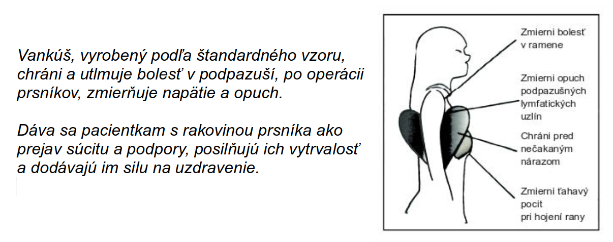

Čo je srdcový vankúš ?
Medzinárodný program Heart Pillow sa začal v Spojených štátoch amerických. Janet Kramerovej-Maiovej (nemocnica Erlanger, Tennessee), klinickej sestre na onkológii, diagnostikovali rakovinu prsníka a jej tri tety jej ušili vankúš v tvare srdca na pooperačnú starostlivosť (2001). Vankúš v tvare srdca, ktorý teraz šijú a darujú dobrovoľníci pacientkam s rakovinou prsníka v mnohých krajinách sveta, sa umiestňuje pod pazuchu na operovanej strane, aby sa znížila bolesť a napätie.
Blahodarné účinky srdcového vankúša
Skúsenosti ukázali, že navrhnutý vankúš v tvare srdca je najviac užitočný, ak sa používa bezprostredne po operácii prsníkov. Jeho používanie má mnoho priaznivých účinkov:
- Podopieraním ramien a paží znižuje lymfatický edém, opuch a napätie v podpazuší, príznaky spôsobené odstránením lymfatických uzlín v podpazuší.
- Zmierni bolesti a pnutie operačnej rany.
- Podopiera hrudník a pomáha pri vykašliavaní.
- Znižuje nepríjemné pocity spôsobené drénmi a rezervoármi po operácii.
- Zabraňuje náhodným otrasom, napr. pri umiestnení pod bezpečnostný pás v aute.
- Podporuje pocit pohodlia.
- Dodáva príjemcovi vankúša emocionálnu silu, pretože cíti, že nie je sám, že sa o neho niekto stará a že myslel na zmiernenie jeho pooperačných problémov, aj keď ho osobne nepozná.
Ako pôsobí?
Zdroj: Nancy Friis-Jensen, www.heartpillow.dk
Cesta srdcového vankúša k pacientovi
Tvorcovia sú dobrovoľníci. Vankúš v tvare srdca vyrábajú zo 100 % bavlneného plátna podľa štandardného vzoru. Výplň tvorí určená gramáž výplne, celková hmotnosť vankúša je 17 dkg. Pri výrobe a balení sa dbá na hygienu. K vankúšu je priložený informačný leták s odkazom na výrobcov a pozdravom.
Najlepšie je, ak pacientka, ktorá prichádza na operáciu prsníka, dostane vankúš ihneď po operácii.
Srdiečkový vankúš je darček, vezmite si ho so sebou domov! Prijmite ho s veľkou láskou!
Dôležitý fakt: Nedostatok vitamínu D je jedným z rizikových faktorov rakoviny prsníka, preto je vhodné doplniť nedostatok a užívať vitamín D3.